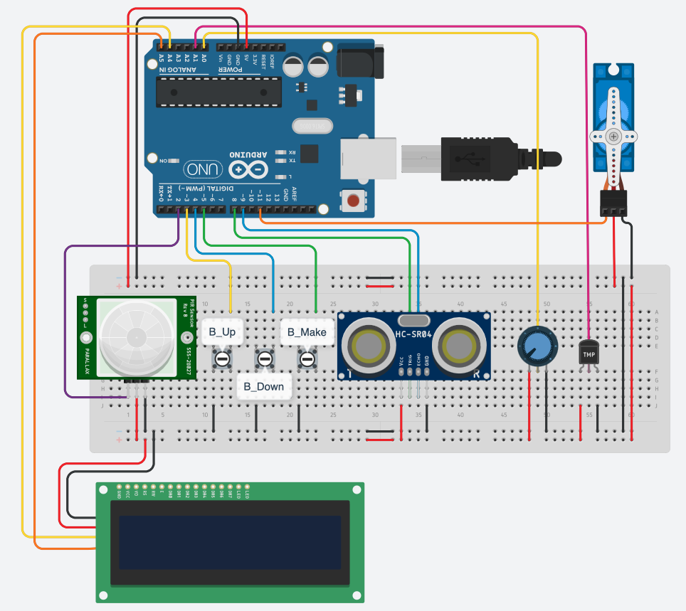
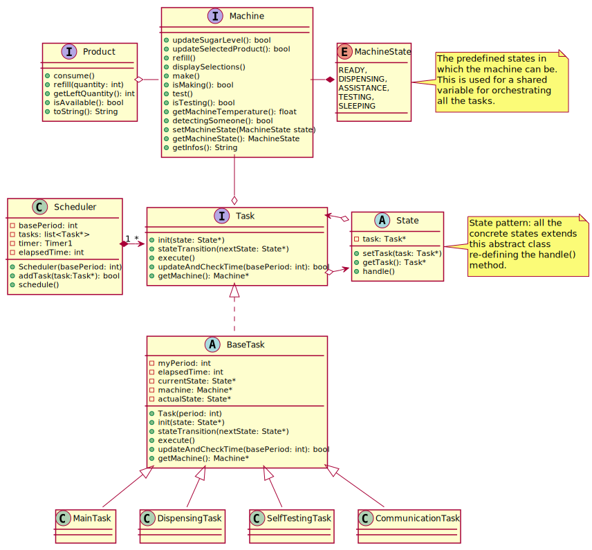

This is a short report explaining the modeling choices made during the development process of this project.
All the requirements of the system can be found here.
Here a short video demonstrating the logic of the system. (Backup video on Unibo Onedrive account in case of problems).
Below, the schematic of the circuit (here the editable schema on Tinkercad):

The focus of this section is on the design choices made along the development process to meet the requirements.
The Arduino program has been conceived using a tasks-based architecture and synchronous Finite State Machines with a fully-static scheduler. For this purpose have been developed 4 different tasks, with different level of abstractions: a Main Task, a Dispensing Task, a Self-Test Task and a Communication Task.
These tasks communicates each other using a shared variable, called state for sake semplicity in the following schemas, which can assume 4 different values:
enum MachineState {
/** The machine is ready to start dispensing a new product */
READY,
/** The machine is dispensing a new product */
DISPENSING,
/** The machine in an assistance state. No products can be made */
ASSISTANCE,
/** The machine is doing a self test */
TESTING,
/** The machine is sleeping */
SLEEPING
};
This is the core task of the system. It deals with the buttons and potentiometer management, opportuntly triggering the dispensing process of a product. It manages also the sleep state and the assistance state of the system, during which the machine cannot dispense any kind of product.
According to some experiments, in order to not loose events, the period of this task has been set to 100ms: every 100ms the current state of this task is executed.
This task takes care of the product dispensing process. It is executed with a period of 50ms.

This task every T_check makes a self test and, depending on the system state, set appropriately the state to ASSISTANCE or READY.

Since T_check is a relatively long time, its period is set up 500ms.
This task has only one state, during which:
Given its nature, this task was also conceived with a fairly long period of 1 second.
Below the UML Class Diagram of the solution. As you can see all the sensors and actuators, as well as the products management, are encapsulated inside a Machine abstraction, which exposes an API which make it possible to be controlled; all the tasks shares an instance of the machine.
For what concerns the tasks and their states, here it is used the State Pattern (GoF).

The Java Program consists of 2 main components:
ManagerView, ManagerViewController) for the GUI management;ActiveController): active component which interacts with the Arduino sub-system through the Serial Line.As you can see from the video, sometimes the display doesn't show correctly the message at the end of the dispensing process. This is a bug which appears randomly whose causes are still to be investigated (probably: out of memory?)